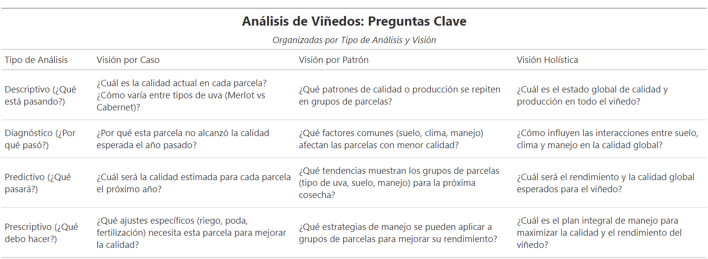

Este proyecto evalúa la calidad de la producción de uva en un viñedo con 14 parcelas, combinando registros históricos de clima, Calidad , pH. El objetivo final es optimizar decisiones de campo (riego, poda, control de plagas) y maximizar la calidad del vino (Merlot y Cabernet), Buscando contestar la pregunta planteada “Las tierras de mi viñedo podrán cubrir con la calidad al 100% de todas las uvas para tener un mejor producto al fin del año?” , para la realizacion de este proyecto se planteo una matriz de vision que tiene este proyecto.
Para iniciar el análisis, se desarrolló un conjunto de datos sintético en RStudio, diseñado para emular condiciones reales de producción en un viñedo con 14 parcelas, a lo largo de 5 años (2020–2024), con registros mensuales por cada etapa fenológica del ciclo de la vida: Cuajado, Envero y Meseta. La generación de datos sigue una lógica controlada de variación por parcela, año y etapa del ciclo. Cada parcela fue diseñada con un “perfil genético” propio, diferenciando variables de clima, poda, plaga y tipo de uva. La variables iniciales creadas son: Parcela, que señala el nombre (por ejemplo, Parcela_1). La variable Fecha indica el día de medición establecido consistentemente el día 15 de cada mes, y las variables Año y Mes, que permiten el análisis temporal del comportamiento del cultivo. La variable EtapaCiclo señala la fase fenológica de la vida en ese momento, pudiendo tomar los valores “Cuajado” (desarrollo del fruto), “Envero” (cambio de color y maduración) o “Meseta” (fase de estabilidad previa a la cosecha).
En cuanto a condiciones climáticas, Temperatura expresa la temperatura media mensual en grados Celsius, mientras que Lluvia representa la precipitación acumulada en milímetros, ambas directamente relacionadas con el desarrollo fisiológico, La variable pH se refiere al nivel de acidez del suelo, influenciando la disponibilidad de nutrientes para la planta. Las variables Poda y Plaga indicandan si durante ese mes se realizaron labores de poda o se detectó alguna plaga en la parcela, factores clave en el manejo agronómico y fitosanitario del cultivo.
La calidad del fruto se refleja a través de GradoBrix, que mide la concentración de azúcares en el jugo de la uva un indicador directo de madurez y potencial enológico ConteoRacimos registra la cantidad estimada de racimos por planta, mientras que PesoRacimos muestra el peso promedio por racimo en kilogramos. Estas dos últimas variables permiten calcular el Rendimiento, que representa la producción total mensual en kilogramos por parcela. Finalmente, Calidad es una variable numérica que resume múltiples factores influyentes en la calidad del cultivo, posiblemente calculada mediante un modelo o fórmula compuesta. La variable Vino identifica el tipo de cepa cultivada, ya sea Merlot o Cabernet.

En el proceso de transformación de datos, se generaron nuevas variables que permitieron una mejor estructuración y análisis de la información. La variable original Parcela, que contenía etiquetas textuales como “Parcela_1”, fue reemplazada por id_parcela, un identificador numérico único para cada parcela, facilitando el manejo y análisis.
De la variable Fecha, se extrajeron componentes temporales como Día, permitiendo análisis temporales más detallados sin depender de formatos complejos de fecha.
La variable categórica EtapaCiclo fue descompuesta en tres variables binarias: ciclo_Cuajado, ciclo_Envero y ciclo_Meseta. Cada una indica con un 1 o 0 si el registro corresponde a esa etapa fenológica específica, facilitando que modelos y análisis puedan distinguir etapas sin ambigüedades.
Las variables originales numéricas como Temperatura, Lluvia, pH, GradoBrix, ConteoRacimos, PesoRacimos, Rendimiento y Calidad se conservaron, manteniendo sus valores cuantitativos para análisis directos.
Las variables Poda y Plaga, que originalmente estaban codificadas como cadenas de texto con valores "Sí" y "No", fueron transformadas a variables binarias representadas numéricamente, donde 1 indica presencia (Sí) y 0 ausencia (No). Esta conversión permitió integrar correctamente estas variables dentro de modelos estadísticos o de machine learning, que requieren entradas numéricas para procesar relaciones y patrones de forma eficiente.


Luego de generar la matriz de correlación, se identificaron dos grupos de variables según su grado de relación con la calidad de uva:
pH ↔ Calidad: Se observa una correlación positiva robusta (~0.58), lo que indica que suelos con pH más alto tienden a producir uvas de mejor calidad. Ejemplo: valores de pH más neutros favorecen la disponibilidad de nutrientes críticos durante etapas críticas como meseta.
PesoRacimos ↔ Rendimiento: Alta correlación (~0.80), lo lógico racimos más pesados aportan mayor rendimiento. Esto confirma que el peso promedio del racimo es buen predictor de producción total.
ConteoRacimos ↔ id_parcela: Esta correlación fuerte no tiene lógica causal real; solo refleja que algunas parcelas tienen sistemáticamente más racimos. Observación: el número de parcela es solo un identificador, no debería usarse como predictor.
Mes, Año, Ciclos fenológicos (Cuajado, Envero, Meseta): valores muy próximos a cero. Conclusión: la fecha o fase, por sí sola, no predice calidad; están incluidas para análisis estacionales, no como variables predictoras directas.
id_parcela ↔ Calidad: correlación negativa moderada (~–0.65), pero es más un artefacto (parcelas con números altos tienen menor calidad). No debe interpretarse como efecto real.


Calidad Promedio por Parcela se observa que: La Parcela 1 sobresale notablemente con una calidad promedio de 93.3, posicionándose como la más destacada del viñedo Las parcelas 2 a 11 mantienen una calidad promedio muy similar, entre 81.0 y 82.0, lo que refleja una homogeneidad productiva aceptable Las parcelas 12 a 14 presentan las calidades más bajas, alrededor de 71.5, marcando un descenso significativo respecto al resto.
En Calidad Promedio por Parcela y Tipo de Uva se observa que: En esta se confirma que las parcelas 1 a 7, todas cultivando Merlot, obtienen calidades superiores y estables. Las parcelas 8 a 11, con Cabernet, aún mantienen calidades aceptables (~81), pero no superan al Merlot. Las parcelas 12 a 14, también con Cabernet, son las que presentan las calidades más bajas, en torno a 71.4.
En Distribución de Calidad por Tipo de Uva permite observar la distribución indiviual de calidades para cada tipo de uva: En esta encontramos que la distribución del Merlot está claramente desplazada hacia calidades más altas y muestra menor dispersión y Cabernet tiene una distribución más amplia y con valores mínimos significativamente más bajos.Esto refuerza la idea de que Merlot es más confiable y consistente en este entorno, mientras que Cabernet presenta desafíos que pueden deberse a su interacción con ciertas parcelas.

Tras analizar los factores agronómicos de más de 10,000 registros, se identificaron patrones consistentes que diferencian a las parcelas de alta calidad. Estos son los factores más influyentes:
üå°Ô∏è Más temperatura promedio (+0.9¬∞C) ‚úÇÔ∏è Mayor poda (+0.3 unidades) üçá Mayor concentraci√≥n de azúcares (Grado Brix) (+0.8) üêõ Menor presencia de plagas (‚Äì0.1) üíß Menos lluvia acumulada (‚Äì8.3 mm) ‚öóÔ∏è pH ligeramente más alto (+0.2)
üìâ Más racimos no significa mejor calidad (123 vs. 112) ‚öñÔ∏è Peso de racimos similar (sin diferencias) üì¶ Rendimiento es mayor en parcelas de calidad (+9 kg aprox.)